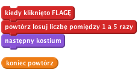
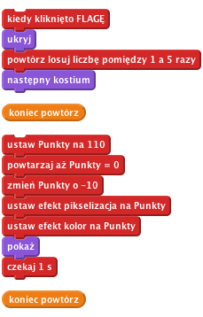
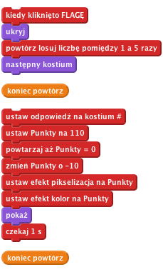
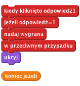

Co to jest
Poziom 3
Na tablicy znajduje się zniekształcony obrazek. Musisz odgadnąć, co to jest, klikając na odpowiednią miniaturkę. Im szybciej zgadniesz, tym więcej punktów otrzymasz!
Chcemy pokazać na tablicy kilka różnych obrazków.
Wyświetlmy teraz jakiś przypadkowy obrazek.

Kliknij zieloną flagę.
Czy duszek ma inny kostium?
Kliknij flagę jeszcze kilka razy
Czy duszek ma inny kostium za każdym razem? Czasem ten sam kostium może pojawić się 2 razy z rzędu. Ale nie przejmuj się, to nie jest problem. Prawdopodobnie zauważyliście, że duszek miga za każdym razem jak zmienia kostium. Zaraz naprawimy ten problem.
Zniekształćmy teraz obrazek, kiedy pojawi się na tablicy po raz pierwszy, a w miarę upływu czasu niech staje się on coraz bardziej wyraźny.
Użyjemy zmiennej z ilością punktów, aby kontrolować jak bardzo obrazek jest zniekształcony. Jeżeli ilość punktów jest duża, obrazek będzie bardzo zniekształcony.
W miarę jak ilość punktów będzie się zmniejszać z czasem, obrazek będzie coraz wyraźniejszy. Ilość punktów będzie również działać jak zegar.
Kliknij paletę Zmienne i stwórz zmienną o nazwie 'Punkty'
Zmień skrypt, aby wyglądał tak jak ten poniżej:

Nie zapomnij dodać bloku 'ukryj' na początku skryptu, ustawić Punkty na 110 oraz wszystkiego poniżej.
Kliknij zieloną flagę.
Czy na tablicy pojawia się przypadkowy, zniekształcony obrazek?
Czy obrazek staje się coraz bardziej wyraźny w miarę upływu czasu?
Czy ilość punktów zmniejsza się jak obrazek staje się coraz bardziej wyraźny?
Czy zniekształcenie znika całkowicie, kiedy ilość punktów spadnie do 0?
Czy na tablicy pojawia się inny obrazek po każdym wciśnięciu flagi?
Spróbuj zmienić ilość punktów na początku gry i wartość o jaką ilość punktów się zmniejsza w pętli. W jaki sposób wpływa to na wygląd obrazka? Czy teraz jest trudniej czy łatwiej odgadnąć co to jest?
Wypróbuj inne efekty graficzne z rozwijanej listy. W jaki sposób wpływają one na poziom trudności gry?
Póki co, nasz przypadkowy obrazek powoli pojawia się na tablicy, a ilość punktów maleje w miarę upływu czasu. Ale jak mamy tę grę wygrać? Najpierw dodamy kilka dodatkowych duszków pod tablicą, które możesz kliknąć. Jeżeli klikniesz odpowiednią miniaturkę, wygrasz grę. Jeżeli klikniesz na zły obrazek, ten duszek zniknie i musisz spróbować zgadnąć jeszcze raz.
Najpierw musimy wiedzieć, która odpowiedź jest poprawna.

Teraz musimy dodać duszki, które gracz będzie mógł kliknąć.
Powinniśmy teraz mieć 5 duszków w rzędzie pod tablicą, każdy z innym kostiumem, który może być wyświetlony na głównym duszku na tablicy. Upewnij się, że duszki 'odpowiedzi' nie posiadają żadnych skryptów.
Teraz zmienimy sposób, w jaki duszki będą reagować na kliknięcia myszką. Dalsze akcje będą zależeć od tego, czy odpowiedź jest poprawna.

Kliknij zieloną flagę.
Podczas testowania gry warto włączyć podgląd na zmienną odpowiedź, aby widzieć poprawną odpowiedź. Na palecie Zmienne kliknij pole obok zmiennej odpowiedź, a pojawi się ona na scenie, w lewym górnym rogu.
Co się dzieje po kliknięciu na poprawną odpowiedź?
Co się dzieje po kliknięciu na niepoprawną odpowiedź?
Co się dzieje z niepoprawną odpowiedzią po rozpoczęciu nowej gry?
Podczas testów dwa problemy powinny się ujawnić. Po pierwsze, duszki z niepoprawnymi odpowiedziami nie wracają na ekran po rozpoczęciu nowej gry. Po drugie, ilość punktów nie zatrzymuje się przy kliknięciu na poprawną odpowiedź.
Aby naprawić drugi problem, trzeba zatrzymać pętlę 'powtórz' na duszku odpowiedzi po kliknięciu poprawnej odpowiedzi. Wymaga to nowej zmiennej. Ustaw ją na 0 po rozpoczęciu gry, a potem na 1 po wygraniu gry.

Brawo! Podstawowa wersja gry jest już gotowa!
Jest jeszcze kilka rzeczy, które można zmienić, aby ulepszyć grę. Spróbuj zrobić poniższe wyzwania!
Zmień poziom trudności gry.
Teraz, za każdym razem jak zaczynasz grę, obrazki są zniekształcone w ten sam sposób. W drugim kroku próbowaliśmy kombinacji różnych zniekształceń, które działały równie dobrze jak zmiana koloru i pikselizacja.
Spróbuj użyć innych kombinacji zniekształceń, które działałyby równie dobrze.
Zmień grę w taki sposób, że za każdym razem obrazki zniekształcane są w inny sposób.
Podpowiedź: Stwórz nową zmienną i nazwij ją 'zniekształcenie'. Przypisz jej przypadkową wartość zaraz na początku gry. Użyj bloku jeżeli w pętli 'powtarzaj aż', aby użyć odpowiedniego zniekształcenia.
Obecnie każda gra jest niezależna. Zmień grę tak, aby można było zagrać w nią kilka razy. Na przykład, niech gracz w ciągu jednej gry ma 3 rundy - niech spróbuje odgadnąć 3 obrazki i zdobyć maksymalnie 300 punktów.
Podpowiedź: Będziesz potrzebować dodatkowej zmiennej, aby wiedzieć, ile rund ma mieć każda gra. Będziesz również potrzebować odpowiedniej pętli, aby gra odbywała się w rundach.
Podpowiedź: Pamiętaj, aby duszki, które zniknęły po złej odpowiedzi, pojawiły się z powrotem na ekranie na początku każdej rundy. Aby to zrobić, spróbuj nadać jakąś wiadomość.
Spraw, aby gra była coraz trudniejsza z rundy na rundę.
Czy w każdej rundzie punkty powinny być przyznawane w ten sam sposób? Może gracz powinien zdobywać więcej punktów w póżniejszych rundach, jeżeli szybciej odgadnie obrazek?
Podpowiedź: Skąd będziemy wiedzieć, w której jesteśmy rundzie gry? W jaki sposób pomoże nam to zwiększyć trudność gry i przyznawać więcej punktów?
Zamiast grać w określoną ilość rund, spróbujmy zmienić grę tak, aby gracz mógł w nią grać dopóki się nie pomyli. Taki system gry będzie miał tylko sens, jeżeli gra będzie się robić coraz trudniejsza z każdą następną rundą.
Spróbujmy dostosować trudność gry do umiejętności gracza, zamiast zwiększać trudność gry z każdą rundą. Jeżeli gracz odgadnie obrazek szybko, spraw, aby gra była trudniejsza w następnej rundzie. Ale jeżeli gracz się pomyli, albo potrzebuje więcej czasu, aby odgadnąć obrazek, niech następna runda będzie troszkę łatwiejsza.
Ten pomysł będzie miał sens tylko wtedy, kiedy nie będziemy sumować ilości punktów w ciągu całej gry.
Zapamiętaj najlepszy wynik. Jeżeli ktoś będzie lepszy w kolejnej grze, zapytaj gracza o jego imię i zapisz nowy najlepszy wynik. Upewnij się, że najlepszy wynik i imię najlepszego gracza są wyświetlone na ekranie.
Póki co, gracz nie jest karany za niepoprawne odpowiedzi, więc teoretycznie może spróbować kliknąć na wszystkie odpowiedzi tak szybko jak się da, aż w końcu trafi na dobrą odpowiedź. Zmieńmy grę, aby za każdą niepoprawną odpowiedź gracz tracił punkty.
Jak myślisz, czy gra teraz jest lepsza?
Brawo! To by było na tyle, teraz możesz się cieszyć swoją grą!
Nie zapomnij, że możesz podzielić się swoją grą ze swoimi przyjaciółmi i rodziną. Żeby to zrobić, kliknij menu Udostępnij.